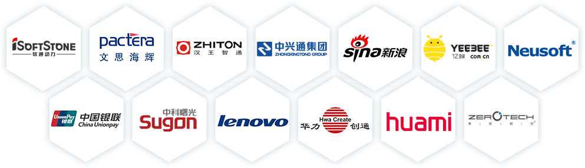

中关村经过20多年的发展建设，已经聚集以联想、百度为代表的高新技术企业近2万家，形成了下一代互联网、移动互联网和新一代移动通信、卫星应用、生物和健康、节能环保、轨道交通等六大优势产业集群，集成电路、新材料、高端装备与通用航空、新能源和新能源汽车等四大潜力产业集群和高端发展的现代服务业，构建了"一区多园"各具特色的发展格局，成为首都跨行政区的高端产业功能区。
中关村是我国科教智力和人才资源最为密集的区域，拥有以北京大学、清华大学为代表的高等院校40多所，以中国科学院、中国工程院所属院所为代表的国家（市）科研院所206所；拥有国家级重点实验室112个，国家工程研究中心38个，国家工程技术研究中心（含分中心）57个；大学科技园26家，留学人员创业园34家。中关村是中央人才工作协调小组首批授予的"海外高层次人才创新创业基地"，留学归国创业人才1.8万人,累计创办企业超过6000家，是国内留学归国人员创办企业数量最多的地区。目前，中关村共有中央"千人计划"人才874人，占全市近八成。"北京海外人才聚集工程"的368名人才，占全市七成以上。"高聚工程"共有158名高端人才及其团队入选。成长出以联想的柳传志、百度的李彦宏、博奥生物的程京、中星微电子的邓中翰、科兴生物的尹卫东、碧水源的文剑平、神雾热能的吴道洪等为代表的一批国内外有影响的新老企业家。2011年3月，中组部、国家发改委等15个中央部门和北京市联合印发了《关于中关村国家自主创新示范区建设人才特区的若干意见》，中关村加快建设人才特区。
